স্তন

স্তন
স্তনাগ্র
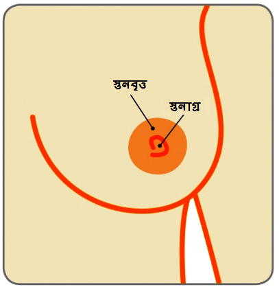
মার্টিনা নাফ্রতিলোভা, একজন কিংবদন্তি ক্রীড়াবিদ, নয় বারের উইম্বলডন একক চ্য়াম্পিয়ন যাঁর ডাক্টাল কার্সিনোমা ইন সিটু(ডিসিআইএস), এক ধরণের প্রাথমিক স্তন কর্কট রোগ নির্ণয় হয় |২০১০ সালে তাঁর ৫৩ বছর বয়স হয়েছিল এবং তিনি তাঁর বার্ষিক স্ক্রীনিং ম্য়ামোগ্রাম করানো থেকে এড়িয়ে যান | যদিও ৪০ বছর বয়সের পর থেকে বার্ষিক স্ক্রীনিং ম্য়ামোগ্রাম করানো বাঞ্ছনীয় | তিনি স্বীকার করেন যে তাঁর সুস্থ জীবনধারা এবং অবস্থা কিছুটা আত্মসন্তুষ্টি তাঁর বার্ষিক চেকআপ না করানোর এড়িয়ে যাওয়ার কারণ |
“আমি ম্য়ামোগ্রাম করানোর মধ্য়ে চার বছর কাটিয়ে দিই, তিনি তাঁর এক সাক্ষাতকারে বলেন | সবাই ব্য়াস্ত হয়, কিন্তু কোন অজুহাত করবেন না | আমি সুস্থ থাকি এবং ঠিক খাবার খাই, তবুও এটা আমার ঘটেছিল | আরেকটি বছর হলেই আমি বদঅ বিপদে পড়তাম |” সৌভাগ্য় বসতঃ প্রাথমিক স্তরে সনাক্ত করা হয়েছিল | তিনি একটি ব্য়াপক স্থানীয় ছেদন(লাম্পেক্টোমী) করান এবং রেডিএশন থেরপী মে ২০১০ সালে সম্পূর্ণ করেন |
সেরিল ক্রো, একজন সুপরিচিত গায়িকা এবং নয় বারের গ্র্য়ামি পুরস্কার বিজয়ী এবং ক্রিষ্টিন অপেলগেট, আরেকজন সুনামধন্য় হলিউড অভিনেত্রী যাদের স্ক্রিনিং ম্য়ামোগ্রামের কারণে প্রাথমিক অবোধ্য় স্তন কর্কট রোগ নির্ণয় হয় |
ডিসিআইএস কি?
স্তনের গঠন ডাক্ট বা নলী, লোব্য়ুলস বা গ্রন্থী এবং চর্বিযুক্ত টিস্য়ুতে গঠিত | ডাক্টাল কার্সিনোমা ইন সিটু(ডিসিআইএস) একটি ধরণের প্রাথমিক স্তন কর্কট যেখানে কর্কট রোগের কোষগুলি নলীর মধ্য়ে হয়(যা স্তনাগ্রে দুধ বহন করে আনে) | এটি প্রক-কর্কট রোগের অবস্থা যেখানে কর্কট রোগের কোষগুলি দুধ বহনকারী নলীর বাইরে আসেপাশের স্তনের সুস্থ টিস্য়ুগুলিকে আক্রন্ত করার ক্ষমতা বিকশিত হয়নি |
ডিসিআইএস কতটা সাধারণ?
আমেরিকান ক্য়ান্সার সোসাইটির মতে, প্রতি বছরে আনুমানিক ৬০,০০০ ডিসিআইএস ঘটনা আমেরিকায় রোগ নির্ণয় হয়(বছরে অন্তত ৫ জনের মধ্য়ে ১ জনের কর্কট রোগ নির্ণয় হয়) | ভারতবর্ষে, ইন্ডিয়ান কাউন্সিল এণ্ড মেডিকাল রিসার্চ(আইসিএমআর) মতে, প্রতি বছর ১৫০,০০০ নতুন স্তন কর্কট রোগের ঘটনা নির্ণয় হয় | তবেম ডিসিআইএস ঘটার কোন নির্দিষ্ট পরিসংখ্য়ায়ন নেই | সচেতনতার অভাব ও সংগঠিত স্ক্রিনিং কার্যক্রমের অভাবের কারণে, ৬০% থেকে বেশী স্তন কর্কট রোগ পরিণত স্থরে আসেন, যাদের মধ্য়ে অধিকাংশ রোগ নির্ণয় হওয়ার এক বছরের মধ্য়ে মৃত্য়ু হয় | ভারতবর্ষে প্রতি দশ মিনিটে একজন মহিলার মৃত্য়ু হচ্ছে |
ডিসিআইএস কিভাবে উপস্থাপিত হয়?
ডিসিআইএস সাধারণতঃ কোন লক্ষণ প্রকাশ করে না | বিপুল সংখ্য়ক ডিসিআইএস(৮০% থেকেও বেশী) কেবল স্ক্রিনিং ম্য়ামোগ্রামের দ্বারা সনাক্ত করা হয়েছে | ডিসিআইএসতে স্তনাগ্র থেকে রক্ত মেশা স্রাব, স্তনাগ্রর চারিপাসে ফুসকুড়ি(প্য়াগেটা রোগ ভাবে পরিচিত) বা কদাচি স্তনের উপরে একটি স্ফীতির আকারে তার উপস্থিতি জানাতে পারে |
ডিসিআইএস কিভাবে রোগ নির্ণয় করা হয়?
ডিসিআইএস নিয়মিত স্তনের স্ক্রিনিং মূল্য়ায়নের সময় নির্ণয় করা হয় | এই মূল্য়ায়নে অন্তর্ভুক্ত রয়েছে বিশেষজ্ঞের দ্বারা ক্লিনিকাল স্তন পরিক্ষণ, ব্রেস্ট ইমেজিং(উভয় স্তনের ম্য়ানোগ্রম এবং আল্ট্রাসাউণ্ড) এবং নিডল কোর বায়প্সি(ত্রৈধ নির্ধারনকরণ)
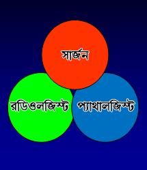
যেহেতু ডিসিআইএস কদাচি একটি স্ফীতির আকারে তার উপস্থিতি জানায়, ক্লিনিকাল স্তন পরিক্ষণ সধারণতঃঅ সহায়ক হয়না | ম্য়ামোগ্রাম, যা স্তন স্ক্রীনিংএর স্বর্ণমান, সাধারণতঃ দেখাযেতে থাকা (প্লিওমর্ফিক) মাইক্রোক্য়ালসিফিকেশন - ক্য়ালসিয়ামের খুব ছোট কণার আকারে ম্য়ামোগ্রামে বিন্দুর মত দেখা যায় | তবে এটা সবসময় মনে রাখতে হবে যে সকল মাইক্রোক্য়ালসিফিকেশন কর্কট রোগ যুক্ত নয় | ডিসিআইএস চেনার জন্য় বহুমূখী বিশেষজ্ঞ দলের দক্ষতার আবশ্য়ক |
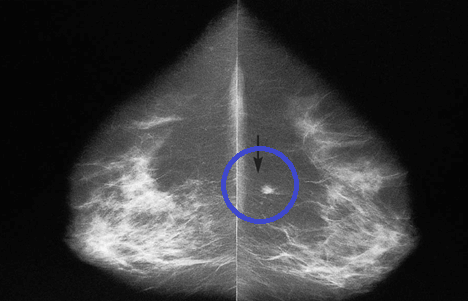
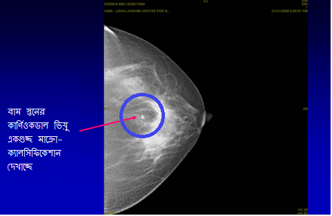
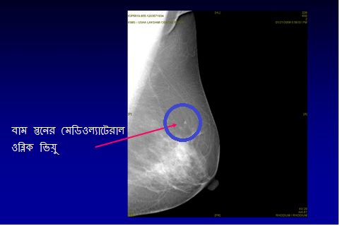
শেষে, রোগ নির্ণয় করার জন্য়, কোর্ নিডল বায়প্সি করে একটি খণ্ড বের করা হয় যা স্টিরিওস্টাটিক তত্বাবধানে(ম্য়ামোগ্রামের সাহায্য়ে) স্থানীয় অনেস্থেসিয়া প্রয়োগে করা হয় | অন্য় ধরণের নিডল বায়প্সি, ফাইন নিডল আস্পায়ারেশন বায়প্সি(এফএন্এসি), যা স্পর্সতে অনুভন করাযেতে পারা স্ফীতির ক্ষেত্রে ব্য়বহৃত হয়, বিভ্রান্তিকর হতে পারে এবং ডিসিআইএস থেকে আক্রমনাত্মক কর্কট রোগের(কর্কট রোগ যা স্তনের অন্য়ান্য় টিস্য়ুতে বিস্তারিত হয়ে গেছে) পার্থক্য় করতে নাও পারে | নিডিল কোর্ বায়প্সি এখন পর্যন্ত সবথেকে সঠিক |
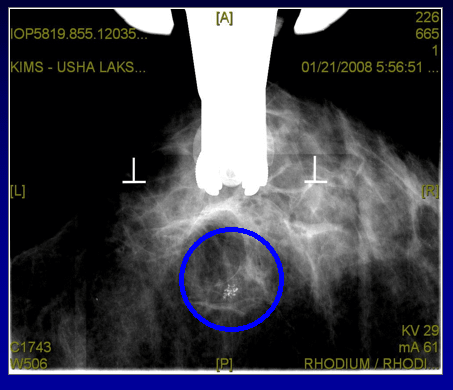
কিছু পরিস্থিতিতে, যখন মাইক্রোক্য়ালসিফিকেশন গুচ্ছ্গুলি অত্য়ন্ত ক্ষুদ্র একভ নিডিল কোর্ বায়প্সির জন্য় অত্য়ন্ত স্বল্প, তখন সাধারন আনেস্থেসিয়া প্রয়োগ করে অত্য়ন্ত সরু পথপ্রদর্শক তার ব্য়বহার করে মাক্রোক্য়ালসিফিকেশনকে স্থানীয় ছেদনের দ্বার বায়প্সি করা আবশ্য়ক হয় |
ডিসিআইএস’এর কিরকম শ্রেণীবিভাগ করা হয় এবং তার তাত্পর্য কি?
ডিসিআইএস’এর শ্রেণীবিভাগ অণুবিক্ষণ যন্ত্রের নিচে কোষের চেহারার উপরে এবং কত তাড়াতাড়ি কোষগুলি বিভাজিত হচ্ছে তার উপরে নির্ভর করে | একে উচ্চ, মধ্য়ম এবং নিম্ন ডিসিআইএস ভাবে শ্রেণীভুক্ত কর হয় | যদি ডিসিআইএস’র চিকিত্সা করা না হয়, কর্কট রোগের কোষগুলি নলীর মধ্য়ে থেকে স্তনের পারিপার্শ্বিক টিস্য়ুগুলিতে প্রসারিত হওয়ার ক্ষমতা বিকশিত হওয়ার সম্ভাবনা থাকে | এটা মারাত্মক স্থন কর্কট রোগ ভাবে পরিচিত | উচ্চ শ্রেণীর ডিসিআইএস’এর তুলনায় নিম্ন শ্রেণীর ডিসিআইএস আক্রমণাত্মক কর্কট রোগে পরিণত হওয়ার সম্ভাবনা কম থাকে |
ডিসিআইএস’এর চিকিত্সা কিভাবে করা হয়?
এই চিকিত্সার লক্ষ হচ্ছে আক্রমনাত্মন স্তন কর্কট রোগের বিকাশকে প্রতিহত করতে স্তনের মধ্য়ে থাকা সমস্ত ডিসিআইএসলে বের করে দেওয়া | এই চিকিত্সা ডাক্ট বা নলীর মধ্য়ে ডিসিআইএস’এর ব্য়াপ্তি এবং ডিসিআইএস’এর শ্রেণীর মত কারণগুলির উপরে নির্ভর করে |
A. অস্ত্রোপচার স্তন সংরক্ষণ অস্ত্রোপচারস্তনের অস্ত্রোপচার ডিসিআইএস’এর প্রথম চিকিত্সা | যদি ডিসিআইএস স্থানীয় হয় এবং স্তনের একটি নির্দিষ্ট স্থানে সীমাবদ্ধ থাকে, তবে স্তন সংরক্ষণ অস্ত্রোপচার কর হয় | যেতেতু এই কর্কট রোগ নিজে রুগী বা ডাক্তারের দ্বরা অনুভব কর সম্ভবপর নয়, তাই একটি সূক্ষ্ম পথপ্রদর্শক তার স্থানীয় আনেস্থেসিযার অধীনে স্তনের মধ্য়ে প্রবেশ করিয়ে স্তনের মধ্য়ে অস্বাভাবিক স্থানের উত্স সন্ধান করা হয় | এটি একটি নির্দেশকের মত কাজ করে এবং সার্জান ডিসিআইএস অঞ্চল ও তার সাথে পারিপার্শিক সুস্থ টিস্য়ুগুলি অপসারণ করতে সক্ষম হন(গুইদে ওয়ার সমর্থিত ব্য়পক স্থানীয় ছেদন)
স্তন সংরক্ষণ অস্ত্রোপচার -
ব্য়াপক স্থানীয় ছেদন

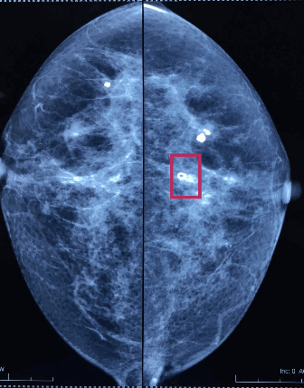
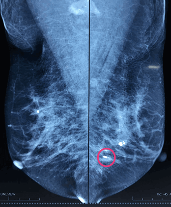
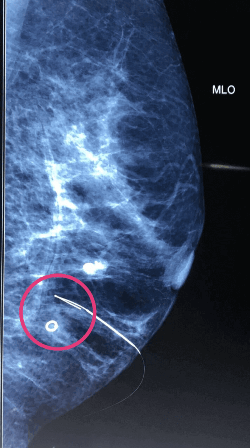
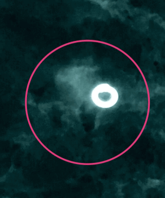
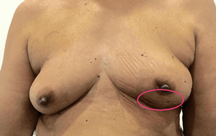
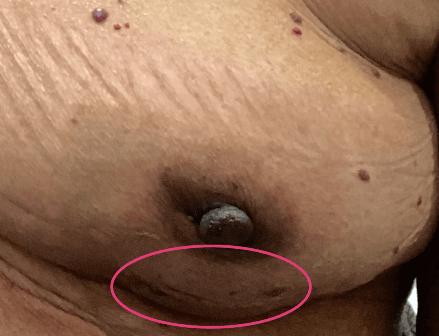
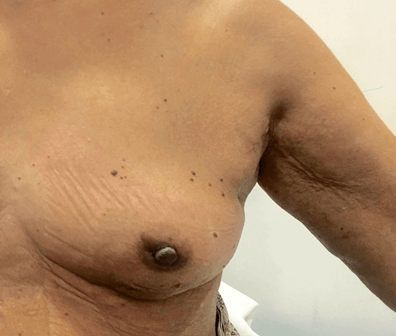
যদি ডিসিআইএস স্তনের একটি বিস্তারিত অঞ্চলে প্রসারিত হয়ে থাকে; এবং যদি স্তন সংরক্ষন অস্ত্রোপচারের মাধ্য়মে ডিসিআইএসর পারিপার্শিক সুস্থ টিস্য়ু অপসারন করা সম্ভব না হয় অথবা স্তনের একধিক স্থানে ডিসিআইএস থাকে(মাল্টিফোকাল ডিসিআইএস), তাহলে, মাস্টেক্টোমী একটি পছন্দের অস্ত্রোপচার চিকিত্সা | যদি মাস্টেক্টোমী অনুমদিত হয়, তাহলে রুগীলে প্রাথমিক অস্ত্রোপচারের সময় স্তন অপসারন জনিত মানসিক এবং আবেগপূর্ণ আঘাত কম করার জন্য় তাত্ক্ষনিক স্তন পুনর্গঠন বিকল্প প্রদান করা উচিত | সাধরণতঃ বগলের নিচের গ্রন্থীগুলি অপসারণ করার আবশ্য়ক হয় না কারণ ডিসিআইএস ডাক্ট বা নলী থেকে স্তনের টিস্য়ুতে ছড়িয়ে গিয়ে থাকে না |
স্তনের অপসারণ -
মাস্টেক্টোমী

সৌজন্য়: ব্রেস্ট ক্য়ান্সার কেয়ার, ইউকে
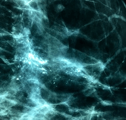
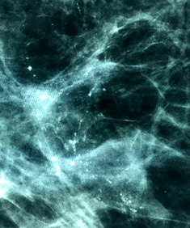
অস্ত্রোপচারের পরে নিম্নলিখিত চিকিত্সাগুলির আবশ্য়কতা রয়েছে | এগুলিকে সহযোগী চিকিত্সা বলা হয় এবং এতে রেডিওথেরাপী এবং হরমোন থেরাপী অন্তর্ভুক্ত |
রেডিওথেরাপী যদি স্তন সংরক্ষণ অস্ত্রোপচার করা হয়ে থাকে, অস্ত্রোপচার হওয়া স্তনে একটি ছয় সপ্তাহের বাইরে থেকে বিম্ রেডিওথেরাপীর মত আদর্শ সহযোগী চিকিত্সা করা হয় | যদি রুগীর আস্টেক্টোমী করা হয়ে গিয়ে থাকে তবে রেডিওথেরাপীর প্রয়োজন নেই |
হরমোন থেরাপী
যদি ডিসিআইএসর ধরণে এষ্ট্রোজেন হরমোনের উপরে নির্ভর করে বৃদ্ধি পেতে থাকে(এস্ট্রোজেন রিসেপ্টার পজেটিভ), হরমোন থেরাপী টামক্সিফেন আকারে দেওয়া যেতে পারে | এটি আরও ডিসিআইএসর শ্রেণীর মত অন্য়ান্য় কারণের উপরে নির্ভর করে |
ডিসিআইএস তে কেমোথেরাপীর প্রয়োজন নেই
ডিসিআইএস কি জীবন হানীকর এবং ডিসিআইএস থেকে আরোগ্য় লাভের সম্ভাবনা কতটা?
না, য়েহেতু কর্কট রোগ দুগ্ধ নলীর বাইরে স্তনের সুস্থ টিস্য়ুতে ছড়িয়ে যায়নি, তাই ডিসিআইএস জীবন নাশকারী নয় | ডিসিআইএসর সাথে মহিলাদের বেঁচে থাকার হার চমত্কার, 100% র কাছাকাছি(98%-99%) |